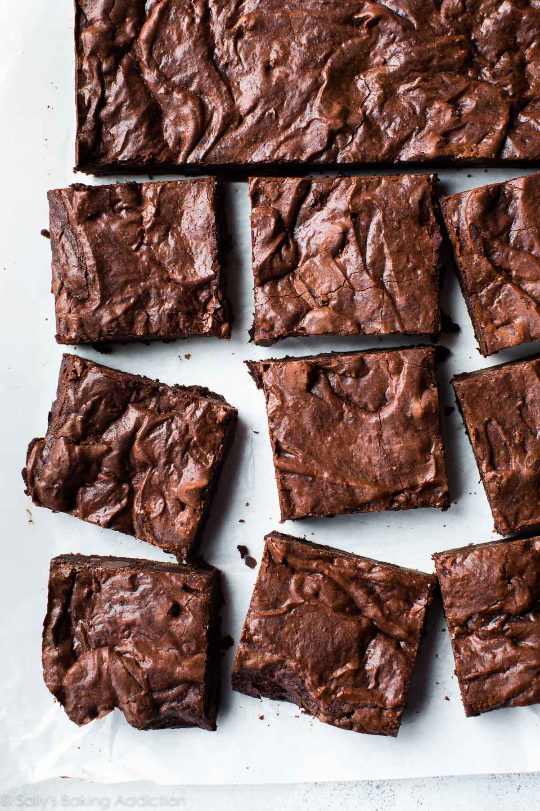
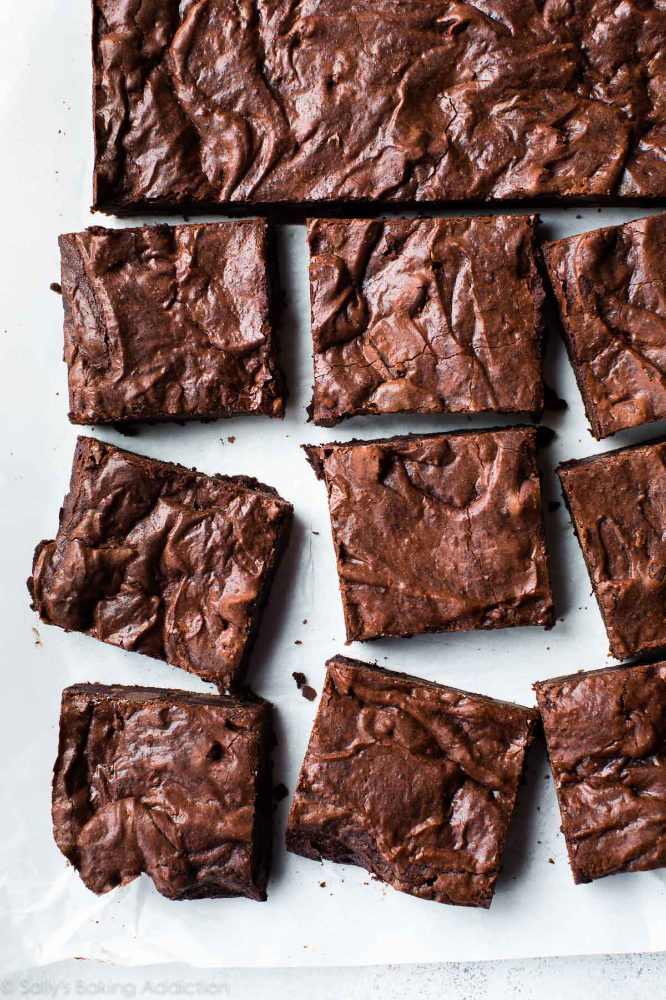

Favorite Recipes
 


Chicken Parm
[Chicken Parm]
Steps to make Chicken Parm
- Pound the chicken breasts to even thickness (about ½ inch thick) for even cooking. Season both sides with salt and pepper.
- Set up a breading station with three shallow dishes: Dish 1: Flour seasoned with salt and pepper. Dish 2: Eggs beaten with 1 tablespoon of water. Dish 3: Breadcrumbs mixed with grated Parmesan cheese.
- Dredge each chicken breast in flour, shaking off excess, then dip in the egg mixture, and finally coat with the breadcrumb mixture.
- Heat a generous amount of olive oil in a large skillet over medium-high heat.
- Fry the chicken until golden brown on each side (about 3-4 minutes per side). The chicken doesn't need to be cooked through at this stage.
- Transfer to a paper towel-lined plate to drain.
- Preheat your oven to 375°F (190°C).
- Spoon some marinara sauce into the bottom of a baking dish.
- Place the fried chicken breasts over the sauce.
- Spoon more marinara sauce over each chicken breast.
- Top each with a generous amount of shredded mozzarella cheese.
- Bake in the preheated oven for about 20-25 minutes, or until the chicken is cooked through and the cheese is bubbly and slightly golden.
- Garnish with fresh basil leaves for a burst of color and freshness.
- Serve hot, ideally with a side of pasta, spaghetti, or a crisp salad.
Marinated Salmon
[Salmon]
Steps to make Marinated Salmon
- In a bowl, whisk together olive oil, soy sauce, brown sugar, lemon juice, minced garlic, grated ginger, Dijon mustard, and honey (if using) until well combined.
- Season the marinade with salt and pepper according to your taste.
- Place the salmon fillets in a shallow dish or a resealable plastic bag.
- Pour the marinade over the salmon, ensuring each fillet is well coated.
- Cover or seal and refrigerate for at least 30 minutes, or up to 2 hours for a stronger flavor. Avoid marinating for too long, as the acid in the marinade can start to break down the fish.
- Preheat your oven to 375°F (190°C) or prepare your grill if you prefer grilled salmon.
- Remove the salmon from the refrigerator and let it sit at room temperature for about 10-15 minutes before cooking.
- Heat the grill to medium-high heat. Grill the salmon skin-side down for about 6-8 minutes, then flip and grill for an additional 3-4 minutes or until desired doneness.
- Once cooked, transfer the salmon to a serving platter.
- You can drizzle some of the cooked marinade over the salmon for extra flavor.
- Garnish with fresh herbs like dill or parsley for a fresh and appealing presentation.
- Serve the marinated salmon with a side of your choice, such as steamed vegetables, rice, or a fresh salad.
Brownies
[Brownies]
Steps to make Brownies
- Preheat your oven to 350°F (175°C).
- Grease a 9x9 inch baking pan or line it with parchment paper for easy removal of the brownies.
- Melt the butter in a medium saucepan or in the microwave. Let it cool slightly.
- In a mixing bowl, combine the melted butter with granulated sugar, eggs, and vanilla extract. Stir well.
- Add cocoa powder, mixing until well incorporated.
- Blend in the flour, salt, and baking powder. Mix just until combined. Avoid overmixing.
- If desired, fold in chopped nuts or chocolate chips.
- Pour the batter into the prepared pan and spread it out evenly.
- Bake for 20 to 25 minutes, or until a toothpick inserted into the center comes out with a few moist crumbs.
- Allow the brownies to cool in the pan on a wire rack before cutting.
- If desired, top with frosting, ice cream, or additional chocolate chips
- Cut into squares and serve.
Chicken Fried Rice
[Chicken Fried Rice]
Steps to make Chicken Fried Rice
- Season the chicken pieces with salt and pepper.
- Chop the garlic and onion, and make sure your peas and carrots are thawed.
- Heat 1 tablespoon of vegetable oil in a large skillet or wok over medium-high heat.
- Add the chicken pieces and cook until browned and cooked through. Remove the chicken and set aside.
- In the same skillet, add a bit more oil if needed. Sauté the garlic and onions until fragrant and translucent.
- Add the peas and carrots, cooking until they are tender.
- Push the vegetables to one side of the skillet. Pour the beaten eggs onto the other side and scramble until set.
- Add the cooked rice to the skillet with the vegetables and eggs.
- Pour in the soy sauce and sesame oil, and stir everything together. Make sure the rice is well-coated with the sauce and ingredients are evenly distributed.
- Continue to cook, stirring frequently, until everything is heated through and combined.
- Taste and adjust seasoning if necessary.
- Serve hot as a fulfilling meal on its own.
Cheese Burger
[Cheese Burger]
Steps to make Cheeseburgers
- Divide the ground beef into 4 equal portions and form them into patties. The patties should be about the size of your buns.
- Season both sides of each patty with salt and pepper.
- Preheat a grill, grill pan, or skillet over medium-high heat.
- Cook the patties for about 3-4 minutes on one side. Flip them over and cook for another 3-4 minutes for medium-rare to medium, or longer for well-done, depending on your preference.
- Place a slice of cheese on each patty during the last minute of cooking to allow it to melt. Close the grill or cover the pan briefly to help the cheese melt.
- Toast the hamburger buns on the grill or in a toaster until lightly golden.
- Place each cheese-topped patty on a bun bottom.
- Add your desired toppings: lettuce, tomato, onion, pickles, ketchup, mustard, and/or mayonnaise.
- Cap with the top half of the bun.
- Serve the cheeseburgers immediately while hot and juicy.